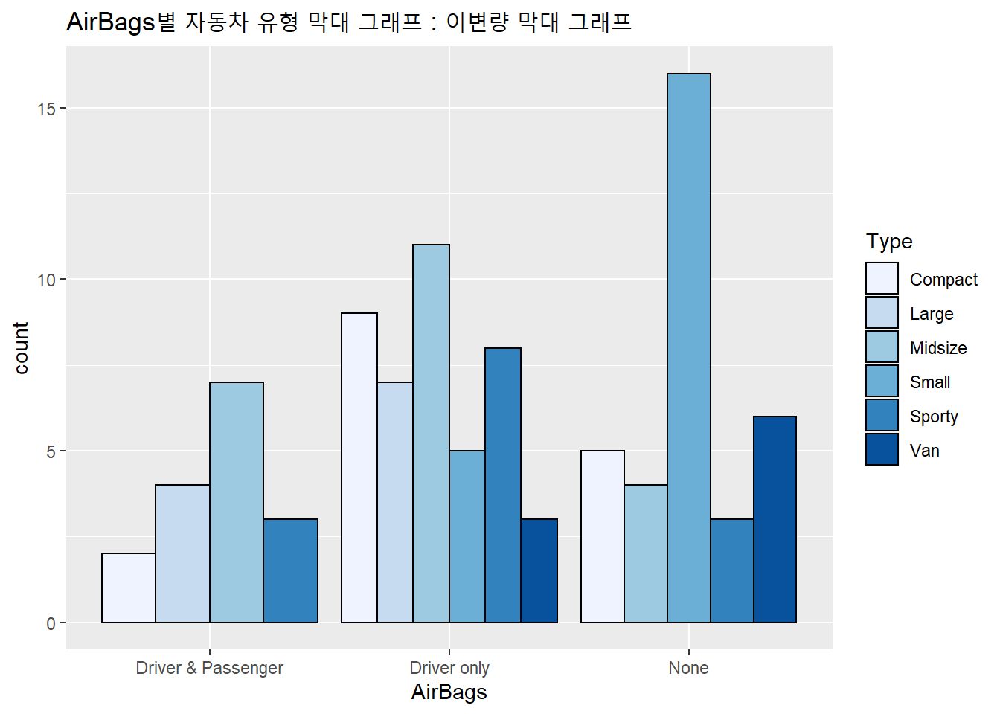
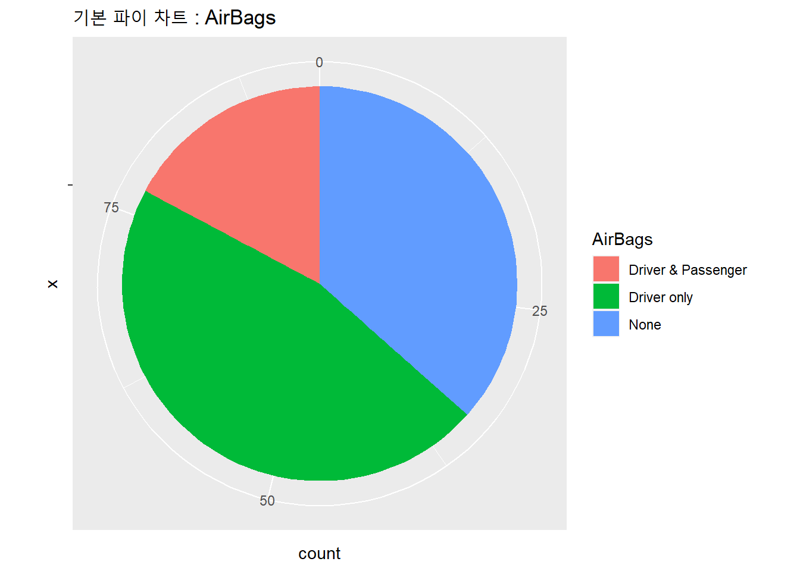
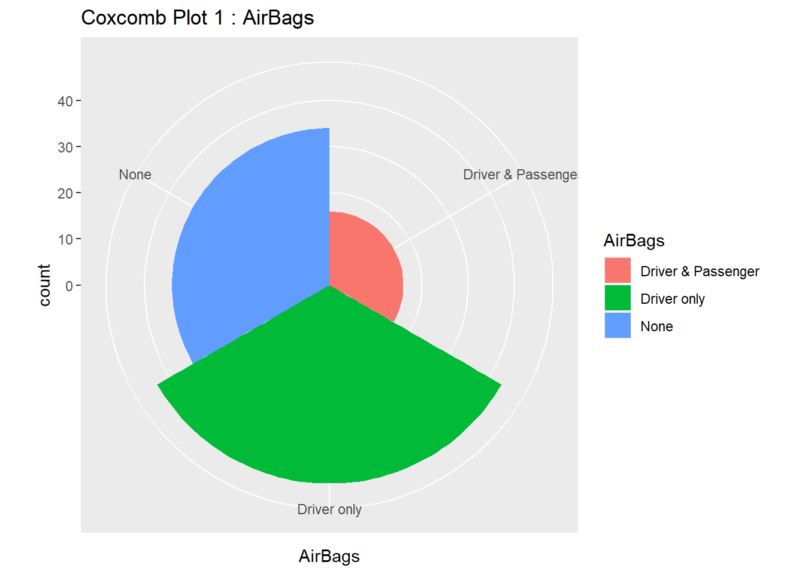

12.6 누적 영역 그래프
시간의 흐름에 따른 그룹/집단 별 관측값 혹은 비율의 변화를 누적해서 볼 수 있는 그래프가 누적 영역 그래프 (Stacked Area Plot) 입니다. 아마 엑셀에서 많이 보았을 법한 그래프일 것이라고 생각합니다.
2007년부터 2014년까지의 한국 수/출입 무역량 (단위: 1 B$) 데이터를 가지고 수출과 수입으로 구분하여서 ggplot2의 geom_area() 함수를 사용하여 누적 영역 그래프(Stacked Area Plot) 를 그려보도록 하겠습니다.
아래는 2007년부터 2014년까지의 한국 수/출입 무역량 (단위: 1 B$) 데이터를 링크해두었습니다.
12.6.1 데이터 전처리
(☞ 한국 수/출입 무역량 데이터 다운로드  trade_stat_07_14.csv)
trade_stat_07_14.csv)
* 출처 : 국가무역통계 KOSIS, http://kosis.kr/statisticsList/statisticsList_01List.jsp?vwcd=MT_ZTITLE&parmTabId=M_01_01#SubCont)
그래프를 그리기에 딱 맞는 형식이 아니므로 csv 데이터를 불러들인 다음에
-> sqldf 패키지를 활용해 Year 단위로 수출입 실적을 집계
-> 이때 단위를 1000$ -> 1B$ 로 바꿔주기 위해 1,000,000 으로 나눠줌
을 써 데이터를 필요에 맞게 집계해보겠습니다.
trade_stat <- read.csv("data/trade_stat_07_14.csv", # 경로 설정
header = TRUE)
trade_stat <- transform(trade_stat, Year = substr(Time, 1, 4))
sapply(trade_stat, class)## Time export_amt import_amt Year
## "numeric" "integer" "integer" "character"# install.packages("sqldf")
library(sqldf)
# 한국 수/출입 무역금액, 단위: 1B$
trade_stat_Year <- sqldf('select Year,
sum(export_amt)/100000 as exp_amt_Year,
sum(import_amt)/100000 as imp_amt_Year
from trade_stat
group by Year
order by Year
')
trade_stat_Year## Year exp_amt_Year imp_amt_Year
## 1 2007 3714 3568
## 2 2008 4220 4352
## 3 2009 3635 3230
## 4 2010 4663 4252
## 5 2011 5552 5244
## 6 2012 5478 5195
## 7 2013 5596 5155
## 8 2014 5726 5255여기까지 했는데도 누적 영역 그래프를 그리기에 딱 맞는 데이터 형태가 아니라서 reshape 패키지의 melt() 함수를 사용하여 데이터를 현재의 가로로 늘어져있는 exp_amt_Year, imp_amt_Year 변수를 -> 세로로 세워서 데이터 구조를 변경해보겠습니다. (wide form의 테이블을 long form의 테이블로 변환)
그 다음에 variable -> trade_cd (수입, 수출 구분 코드), value -> amount_B (무역금액, 단위 : 1B$) 로 변수명을 변경하였습니다.
# 데이터 구조 녹이기(melt) - 세로로 세우기 (Long Form)
library(reshape)
trade_stat_Year_melt <- melt(trade_stat_Year, idvars = c("Year"))## Using Year as id variablestrade_stat_Year_melt## Year variable value
## 1 2007 exp_amt_Year 3714
## 2 2008 exp_amt_Year 4220
## 3 2009 exp_amt_Year 3635
## 4 2010 exp_amt_Year 4663
## 5 2011 exp_amt_Year 5552
## 6 2012 exp_amt_Year 5478
## 7 2013 exp_amt_Year 5596
## 8 2014 exp_amt_Year 5726
## 9 2007 imp_amt_Year 3568
## 10 2008 imp_amt_Year 4352
## 11 2009 imp_amt_Year 3230
## 12 2010 imp_amt_Year 4252
## 13 2011 imp_amt_Year 5244
## 14 2012 imp_amt_Year 5195
## 15 2013 imp_amt_Year 5155
## 16 2014 imp_amt_Year 5255# 변수명 변경
trade_stat_Year_melt <- rename(trade_stat_Year_melt,
c(variable="trade_cd", value="amount_B"))
trade_stat_Year_melt## Year trade_cd amount_B
## 1 2007 exp_amt_Year 3714
## 2 2008 exp_amt_Year 4220
## 3 2009 exp_amt_Year 3635
## 4 2010 exp_amt_Year 4663
## 5 2011 exp_amt_Year 5552
## 6 2012 exp_amt_Year 5478
## 7 2013 exp_amt_Year 5596
## 8 2014 exp_amt_Year 5726
## 9 2007 imp_amt_Year 3568
## 10 2008 imp_amt_Year 4352
## 11 2009 imp_amt_Year 3230
## 12 2010 imp_amt_Year 4252
## 13 2011 imp_amt_Year 5244
## 14 2012 imp_amt_Year 5195
## 15 2013 imp_amt_Year 5155
## 16 2014 imp_amt_Year 525512.6.2 누적영역 그래프 그리기
이제 드디어 누적 영역 그래프를 그릴 데이터 셋 준비가 다 되었군요. ggplot2의 geom_area() 함수를 사용하여 우선 값 기준으로 그리고, 다음으로 비율 기준으로도 그려보겠습니다.
geom_area(colour=NA)로 하고 geom_line(position="stack")으로 해서 양 옆에 선은 트여주고, 영역 간 경계선은 그려주었습니다.
# 누적 영역 그래프 그리기
ggplot(trade_stat_Year_melt, aes(x=Year, y=amount_B, fill=trade_cd, group=trade_cd)) +
geom_area(colour=NA, alpha=0.5) + # alpha 투명도
scale_fill_brewer(palette="Blues") +
geom_line(position="stack", size=0.3) +
ggtitle("Stacked Area Plot of Trade (Import, Export) from 2007 to 2014")
12.6.3 누적영역 순서 바꾸기
aes(arder=desc()) 를 사용하여 위의 영역 구분 그룹의 순서를 바꿀 수도 있습니다. 위의 예제에서는 exp_amt_Year (수출액)이 아래에 위치했습니다만, 아래 예제에서는 exp_amt_Year(수출액)이 위로 위치가 바뀌었음을 알 수 있습니다.
# 누적 영역 순서 바꾸기
library(plyr) # desc() 함수 사용 위해 필요## ------------------------------------------------------------------------------## You have loaded plyr after dplyr - this is likely to cause problems.
## If you need functions from both plyr and dplyr, please load plyr first, then dplyr:
## library(plyr); library(dplyr)## ------------------------------------------------------------------------------##
## Attaching package: 'plyr'## The following objects are masked from 'package:reshape':
##
## rename, round_any## The following objects are masked from 'package:dplyr':
##
## arrange, count, desc, failwith, id, mutate, rename, summarise,
## summarize## The following object is masked from 'package:purrr':
##
## compactggplot(trade_stat_Year_melt, aes(x=Year, y=amount_B, fill=trade_cd, group=trade_cd,
order=desc(trade_cd))) + # 누적 영역 순서 내림차순 정렬
geom_area(colour=NA, alpha=0.5) + # alpha 투명도
scale_fill_brewer(palette="Blues") +
geom_line(position="stack", size=0.3) +
ggtitle("Stacked Area Plot of Trade (Import, Export) from 2007 to 2014")
12.6.4 비율 기준의 누적영역 그래프
이번에는 비율 기준으로 해서 누적 영역 그래프를 그려보겠습니다. 이를 위해서는 데이터셋에서 Year 별로 비율을 계산해주어야 합니다. 데이터 프레임에서 사칙연산을 써가면서 transform() 함수로 step-by-step 해나갈 수도 있는데요, plyr패키지의 ddply() 함수를 사용하면 놀랍도록 간편하게 원하는 비율 값을 구할 수 있습니다.
12.6.4.1 비율 계산하기
#-----
# 비율 누적 영역 그래프 그리기
# 비율 계산하기
# install.packages("plyr")
library(plyr)
trade_stat_Year_melt_prop <- ddply(trade_stat_Year_melt,
"Year", transform,
trade_prop = round(100*amount_B/sum(amount_B),1))
trade_stat_Year_melt_prop## Year trade_cd amount_B trade_prop
## 1 2007 exp_amt_Year 3714 51
## 2 2007 imp_amt_Year 3568 49
## 3 2008 exp_amt_Year 4220 49
## 4 2008 imp_amt_Year 4352 51
## 5 2009 exp_amt_Year 3635 53
## 6 2009 imp_amt_Year 3230 47
## 7 2010 exp_amt_Year 4663 52
## 8 2010 imp_amt_Year 4252 48
## 9 2011 exp_amt_Year 5552 51
## 10 2011 imp_amt_Year 5244 49
## 11 2012 exp_amt_Year 5478 51
## 12 2012 imp_amt_Year 5195 49
## 13 2013 exp_amt_Year 5596 52
## 14 2013 imp_amt_Year 5155 48
## 15 2014 exp_amt_Year 5726 52
## 16 2014 imp_amt_Year 5255 4812.6.4.2 비율 누적 영역 그래프
위의 trade_prop 변수를 활용해서 비율 누적 영역 그래프(Propostion stacked area plot)을 그려보도록 하겠습니다. 값을 기준으로 했을 때와 script는 동일하며, y값 자리에 trade_prop (수출입 무역 비율) 변수로 바꾸어주기만 하면 됩니다.
그래프 뒤에 단위 격자가 보이도록 geom_area(alpha=0.5) 로 해서 약간 투명하게 처리했습니다.
# 비율 누적 영역 그래프 그리기
library(plyr) # desc() 함수 사용 위해 필요
ggplot(trade_stat_Year_melt_prop,
aes(x=Year, y=trade_prop,
fill=trade_cd, group=trade_cd,
order=desc(trade_cd))) + # 누적 영역 순서 내림차순 정렬
geom_area(colour=NA, alpha=0.5) + # alpha 투명도
scale_fill_brewer(palette="Blues") +
geom_line(position="stack", size=0.3) +
ggtitle("Stacked Area Plot of Trade Proportion (Import, Export) from 2007 to 2014")